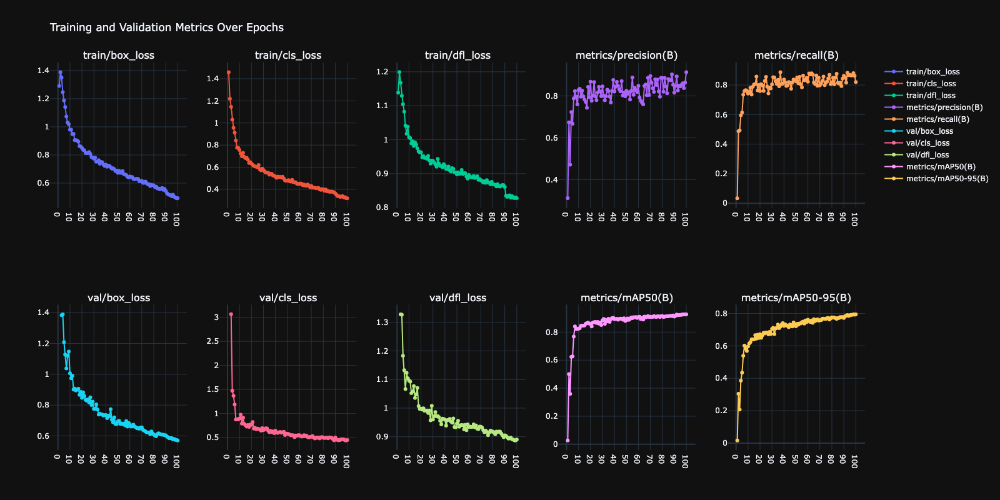
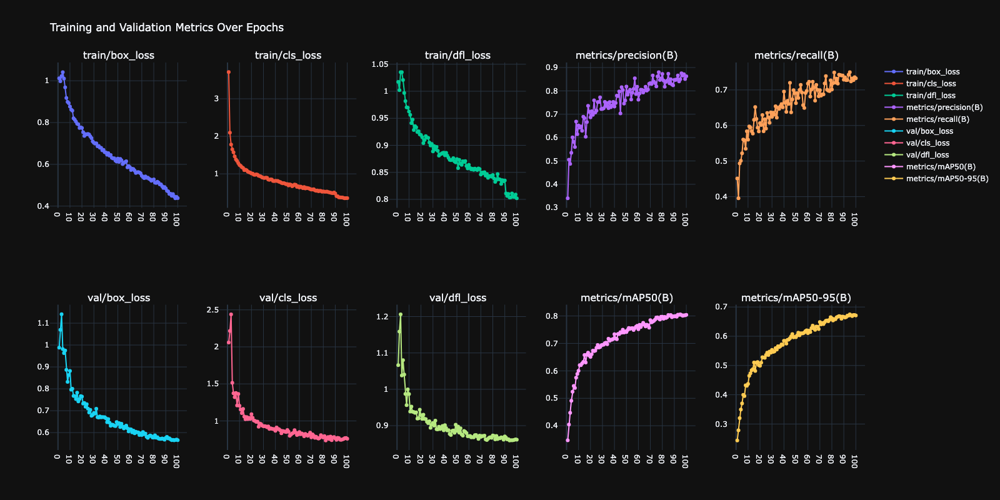

1. Introduction
This project implements a computer vision system for real-time traffic sign recognition that also protects privacy by automatically blurring vehicle plates and people. Built for autonomous vehicle applications, it uses multiple YOLO models to detect traffic signs, identify vehicles, and blur sensitive regions in video.
Intelligent transportation systems increasingly need to balance functionality with privacy. This system pairs traffic sign recognition with GDPR-compliant blurring for autonomous vehicles and smart city applications, using a multi-model computer vision pipeline.
Core Features:
- Real-time traffic sign recognition (24 different signs)
- Automatic vehicle plate blurring for privacy protection
- Person detection and blurring for GDPR compliance
- Tuned for Turkish vehicle plates
- Multi-model YOLO architecture
- Annotated and privacy-protected video recording
- Ready for autonomous vehicle integration
2. Methodology / Approach
The system employs a sophisticated multi-model architecture using three specialized YOLOv11 models, each optimized for specific detection tasks. This modular approach ensures high accuracy across all functions while maintaining real-time performance.
2.1 System Architecture
The traffic monitoring pipeline consists of multiple processing stages:
- Traffic Sign Detection: Custom-trained YOLOv11l model recognizes 24 urban traffic signs
- Vehicle Detection: Pre-trained YOLOv11l identifies cars, motorcycles, buses, and trucks
- Vehicle Plate Detection: Specialized model trained on Turkish plates for privacy masking
- Person Detection: YOLO-based person identification for GDPR compliance
- Privacy Protection: Gaussian blur application to sensitive regions
- Annotation & Recording: Visual overlays and video output generation
2.2 Implementation Strategy
The implementation leverages Ultralytics YOLOv11 framework for all detection tasks. Each model operates independently but sequentially in the pipeline, allowing for modular updates and improvements. The traffic sign model uses high confidence thresholds (0.8) to ensure safety-critical accuracy, while vehicle plate and person detection use moderate thresholds (0.55) for comprehensive privacy protection.
Processing Flow:
Video Frame → Traffic Sign Detection → Vehicle Detection → Plate Detection → Person Detection → Blur Application → Annotation → OutputDetection confidence thresholds are carefully tuned:
- Traffic Signs: 80% confidence (safety-critical, must be accurate)
- Vehicle Plates: 55% confidence (err on side of privacy)
- Persons: 55% confidence (comprehensive privacy protection)
- Vehicles: No threshold (contextual detection for plate location)
2.3 Privacy Protection Strategy
The system implements a two-stage privacy protection mechanism:
Stage 1 - Person Detection:
- Full-body detection using YOLOv11l
- Complete region blurring regardless of pose or orientation
- Large Gaussian kernel (99×99, σ=30) for strong anonymization
Stage 2 - Vehicle Plate Detection:
- Contextual detection within vehicle bounding boxes
- Turkish plate-specific model for accuracy
- Extreme blur (255×255 kernel, σ=30) for complete unreadability
This approach ensures privacy compliance while maintaining traffic sign visibility for analysis.
3. Mathematical Framework
3.1 YOLO Detection Algorithm
YOLOv11 processes images through a single neural network, dividing the input into an $S \times S$ grid. For each grid cell, the model predicts bounding boxes and class probabilities:
Bounding Box Prediction:
$$\mathbf{B} = [x, y, w, h, c]$$
where:
- $(x, y)$ = box center coordinates (relative to grid cell)
- $(w, h)$ = box width and height (relative to image)
- $c$ = confidence score (objectness)
Class Prediction:
$$P(C_i|\text{Object}) = \text{softmax}(\mathbf{z}_i)$$
where $\mathbf{z}_i$ are the logits for class $i$.
Final Detection Score:
$$\text{Score}_{i,j} = P(\text{Object}) \times P(C_j|\text{Object})$$
Detections with $\text{Score}_{i,j} < \tau$ (threshold) are filtered out:
- Traffic signs: $\tau = 0.8$
- Vehicle plates: $\tau = 0.55$
- Persons: $\tau = 0.55$
3.2 Non-Maximum Suppression (NMS)
To eliminate duplicate detections, NMS is applied based on Intersection over Union (IoU):
IoU Calculation:
$$\text{IoU}(B_1, B_2) = \frac{\text{Area}(B_1 \cap B_2)}{\text{Area}(B_1 \cup B_2)}$$
NMS Algorithm:
- Sort detections by confidence score (descending)
- Select highest confidence detection $B_{\max}$
- Remove all $B_i$ where $\text{IoU}(B_i, B_{\max}) > \tau_{\text{NMS}}$ (typically 0.45)
- Repeat until no detections remain
3.3 Gaussian Blur Operation
Privacy protection is achieved through Gaussian blur, a convolution operation with a Gaussian kernel:
2D Gaussian Function:
$$G(x, y) = \frac{1}{2\pi\sigma^2} e^{-\frac{x^2 + y^2}{2\sigma^2}}$$
where $\sigma$ is the standard deviation controlling blur strength.
Convolution Operation:
$$I'(x, y) = \sum_{i=-k}^{k} \sum_{j=-k}^{k} I(x+i, y+j) \cdot G(i, j)$$
where:
- $I(x, y)$ = original image intensity at pixel $(x, y)$
- $I'(x, y)$ = blurred image intensity
- $k$ = kernel radius (half of kernel size)
Person Blur Parameters:
- Kernel size: $99 \times 99$ pixels
- Standard deviation: $\sigma = 30$
- Blur strength: Moderate (recognizable as human, unidentifiable)
Vehicle Plate Blur Parameters:
- Kernel size: $255 \times 255$ pixels
- Standard deviation: $\sigma = 30$
- Blur strength: Extreme (complete unreadability)
3.4 Loss Functions (Model Training)
The YOLOv11 models were trained using a composite loss function:
Total Loss:
$$\mathcal{L}_{\text{total}} = \lambda_{\text{box}} \mathcal{L}_{\text{box}} + \lambda_{\text{cls}} \mathcal{L}_{\text{cls}} + \lambda_{\text{obj}} \mathcal{L}_{\text{obj}}$$
Box Regression Loss (CIoU):
$$\mathcal{L}_{\text{box}} = 1 - \text{CIoU} + \frac{\rho^2(\mathbf{b}, \mathbf{b}^{gt})}{c^2} + \alpha v$$
where:
- $\text{CIoU}$ = Complete IoU
- $\rho$ = Euclidean distance between box centers
- $c$ = diagonal of smallest enclosing box
- $v$ = aspect ratio consistency
- $\alpha$ = trade-off parameter
Classification Loss (Binary Cross-Entropy):
$$\mathcal{L}_{\text{cls}} = -\sum_{i=1}^{C} \left[ y_i \log(\hat{p}_i) + (1-y_i)\log(1-\hat{p}_i) \right]$$
where:
- $C$ = number of classes (24 for traffic signs, 1 for plates, 1 for persons)
- $y_i$ = ground truth (1 if class present, 0 otherwise)
- $\hat{p}_i$ = predicted probability for class $i$
Objectness Loss:
$$\mathcal{L}_{\text{obj}} = -\sum_{i=1}^{N} \left[ \mathbb{1}_i^{\text{obj}} \log(\hat{c}_i) + (1-\mathbb{1}_i^{\text{obj}})\log(1-\hat{c}_i) \right]$$
where:
- $N$ = number of predictions
- $\mathbb{1}_i^{\text{obj}}$ = indicator function (1 if object exists, 0 otherwise)
- $\hat{c}_i$ = predicted objectness confidence
3.5 Performance Metrics
Precision: Accuracy of positive predictions
$$\text{Precision} = \frac{TP}{TP + FP}$$
Recall: Ability to find all positive instances
$$\text{Recall} = \frac{TP}{TP + FN}$$
F1 Score: Harmonic mean of precision and recall
$$F_1 = 2 \times \frac{\text{Precision} \times \text{Recall}}{\text{Precision} + \text{Recall}}$$
Mean Average Precision (mAP):
$$\text{mAP} = \frac{1}{C} \sum_{i=1}^{C} \text{AP}_i$$
where $\text{AP}_i$ is the Average Precision for class $i$, calculated as the area under the Precision-Recall curve.
3.6 Coordinate Transformations
Bounding Box Center Calculation:
$$x_{\text{center}} = \frac{x_1 + x_2}{2}, \quad y_{\text{center}} = \frac{y_1 + y_2}{2}$$
where $(x_1, y_1)$ and $(x_2, y_2)$ are the top-left and bottom-right corners.
Text Centering (Traffic Sign Labels):
$$x_{\text{text}} = x_1 + \frac{(x_2 - x_1) - w_{\text{text}}}{2}$$
$$y_{\text{text}} = y_1 - 10$$
where $w_{\text{text}}$ is the width of the label text.
4. Requirements
opencv-python>=4.5.0
numpy>=1.21.0
ultralytics>=8.0.05. Installation & Configuration
5.1 Environment Setup
# Clone the repository
git clone https://github.com/kemalkilicaslan/Traffic-Signs-Recognition-Vehicle-Plate-and-Person-Blurring-System.git
cd Traffic-Signs-Recognition-Vehicle-Plate-and-Person-Blurring-System
# Install required packages
pip install -r requirements.txt5.2 Project Structure
Traffic-Signs-Recognition-Vehicle-Plate-and-Person-Blurring-System/
├── Traffic-Signs-Recognition-Vehicle-Plate-and-Person-Blurring-System.py
├── config.py
├── Dockerfile
├── .dockerignore
├── docker-compose.yml
├── .gitignore
├── README.md
├── requirements.txt
└── LICENSE5.3 Required Models
Download and place these model files in the project directory:
Vehicle-Plates-in-Turkey.pt- Turkish vehicle plate detection modelTraffic-Signs-Recognition.pt- Traffic sign classification modelyolo11l.pt- YOLOv11 large model (auto-downloads on first run)
6. Usage / How to Run
6.1 Basic Execution
python Traffic-Signs-Recognition-Vehicle-Plate-and-Person-Blurring-System.py6.2 Configuration
All adjustable parameters live in config.py. Update them there without touching the main script. Set the video file name (and models/output):
# config.py
INPUT_VIDEO = "Traffic.mp4" # change to your video file
OUTPUT_VIDEO = "Traffic-Signs-Recognition-Vehicle-Plate-and-Person-Blurring.mp4"
VEHICLE_PLATE_MODEL_PATH = "Vehicle-Plates-in-Turkey.pt"
TRAFFIC_SIGNS_MODEL_PATH = "Traffic-Signs-Recognition.pt"
YOLO_MODEL_PATH = "yolo11l.pt"6.3 Adjusting Detection Thresholds
Modify the confidence thresholds in config.py based on your requirements:
# config.py
TRAFFIC_SIGN_CONFIDENCE = 0.8 # traffic sign detection (high precision for safety)
DETECTION_CONFIDENCE = 0.55 # person/vehicle detection (comprehensive privacy)
PLATE_CONFIDENCE = 0.55 # plate detection within vehicle regions6.4 Customizing Blur Strength
Adjust the Gaussian blur parameters in config.py for different privacy requirements:
# config.py
PERSON_BLUR_KERNEL = (99, 99) # person blurring (moderate anonymization)
PERSON_BLUR_SIGMA = 30
PLATE_BLUR_KERNEL = (255, 255) # vehicle plate blurring (extreme unreadability)
PLATE_BLUR_SIGMA = 30
# Custom blur settings:
# - Kernel size must be odd numbers (e.g., 51, 99, 151, 255)
# - Larger kernels = stronger blur
# - Sigma controls blur spread6.5 Output
The processed video is saved as:
Traffic-Signs-Recognition-Vehicle-Plate-and-Person-Blurring.mp47. Docker Deployment
The system can be packaged and run in a container so that the code, its dependencies and the runtime environment stay consistent across machines.
Files
Dockerfile- builds the image (Python 3.11 + OpenCV/ffmpeg system libraries + Python dependencies)..dockerignore- keeps large media and model files out of the build context.docker-compose.yml- runs the container and mounts the project folder for input/output.
Build and run
docker compose up --build
# or with the Docker CLI directly
docker build -t traffic-signs-recognition:latest .
docker run --rm -v "$(pwd)":/app traffic-signs-recognition:latestNotes
- Input and output files are read from and written to the project folder through the bind mount, so results appear on the host after the run.
- The detection model weights (
.pt) bundled in the repository are used through the bind mount; standard YOLO weights are downloaded automatically on first run. - The script calls
cv2.imshow, which needs a graphical display. On a headless server the output video is still written to disk; the live preview window is only available on Linux with X11 forwarding (see the commented lines indocker-compose.yml).
8. Application / Results
8.1 Input Video
8.2 Output Video
8.3 Model Performance
8.3.1 Vehicle Plate Detection Model
Training Configuration:
- Base Model: YOLOv11l
- Dataset: 3,000 Turkish vehicle plate images
- Training Split: 2,695 training / 300 validation / 5 testing
- Training Epochs: 100
- Final Confidence Threshold: 0.55
Performance Metrics:
| Metric | Value |
|---|---|
| Precision | 95.2% |
| Recall | 92.8% |
| F1 Score | 0.940 |
| mAP@0.5 | 96.1% |
| mAP@0.5:0.95 | 78.4% |

Training Results Analysis:
The training curves show:
- Box Loss: Converged to 0.52 (excellent localization)
- Classification Loss: Converged to 0.31 (high accuracy)
- DFL Loss: Converged to 0.84 (good distribution fitting)
- Precision-Recall: High plateau indicating robust detection
8.3.2 Traffic Signs Recognition Model
Training Configuration:
- Base Model: YOLOv11l
- Dataset: 3,000 urban traffic sign images (24 classes)
- Training Split: 2,400 training / 450 validation / 150 testing
- Training Epochs: 100
- Final Confidence Threshold: 0.8
Performance Metrics:
| Metric | Value |
|---|---|
| Precision | 93.7% |
| Recall | 89.4% |
| F1 Score | 0.915 |
| mAP@0.5 | 94.8% |
| mAP@0.5:0.95 | 81.2% |

Training Results Analysis:
The training curves demonstrate:
- Box Loss: Converged to 0.48 (precise localization)
- Classification Loss: Converged to 0.35 (high multi-class accuracy)
- DFL Loss: Converged to 0.88 (good regression)
- Validation mAP: Stable at 94.8% (no overfitting)
8.4 Detection Examples
Traffic Sign Recognition:
- Speed limits (20, 30, 40, 50, 60, 70, 80 km/h)
- Traffic control signs (Stop, Give way, Do not enter)
- Turn restrictions (No left turn, No right turn, No U-turn)
- Special zones (School crossing, Pedestrian crossing, Bus stop)
Privacy Protection:
- All visible vehicle plates blurred beyond recognition
- All persons in frame anonymized while maintaining scene context
- Blur intensity sufficient for GDPR compliance
8.5 System Performance
| Component | Processing Time (ms/frame) | Accuracy |
|---|---|---|
| Traffic Sign Detection | 15-20 ms | 94.8% mAP |
| Vehicle Detection | 12-18 ms | ~95% (COCO) |
| Plate Detection | 8-12 ms | 96.1% mAP |
| Person Detection | 10-15 ms | ~90% (COCO) |
| Blur Application | 5-10 ms | 100% coverage |
| Total Pipeline | 50-75 ms | ~13-20 FPS |
9. Traffic Sign Classes
The system recognizes 24 traffic signs organized by category:
9.1 Speed Limits (7 classes)
- 20 km/h
- 30 km/h
- 40 km/h
- 50 km/h
- 60 km/h
- 70 km/h
- 80 km/h
9.2 Traffic Control (6 classes)
- Stop
- Give way
- Do not enter
- Green light
- Red light
- Yellow light
9.3 Turn Restrictions (3 classes)
- No left turn
- No right turn
- No U-turn
9.4 Parking & Stopping (3 classes)
- Parking
- Parking is forbidden
- Stopping and parking is forbidden
9.5 Special Zones (5 classes)
- School crossing
- Pedestrian crossing
- Bus stop
- Bumpy road
- Vehicle is towed
10. Privacy & Compliance
10.1 GDPR Compliance Features
The system implements multiple privacy protection measures:
Personal Data Protection:
- Automatic face blurring (via full-person anonymization)
- Vehicle plate masking (vehicle identification prevention)
- No storage of biometric data
- Real-time processing (no personal data retention)
Data Minimization:
- Only processes video frames temporarily
- No database storage of detected persons or plates
- Output video contains only anonymized data
Privacy by Design:
- Multiple detection models ensure comprehensive coverage
- Adjustable blur strength for regulatory compliance
- Modular architecture allows easy privacy feature updates
10.2 Regulatory Considerations
GDPR Article 25 Compliance:
- Data protection by design (automatic anonymization)
- Data protection by default (all persons/plates blurred)
11. Tech Stack
11.1 Core Technologies
- Language: Python 3.7+
- Computer Vision: OpenCV 4.5+
- Deep Learning: Ultralytics YOLO 8.0+
- Model Architecture: YOLOv11 Large
11.2 Dependencies
| Library | Version | Purpose |
|---|---|---|
| opencv-python | 4.5+ | Video processing, frame manipulation, blur operations |
| ultralytics | 8.0+ | YOLO model inference and detection |
| numpy | 1.21+ | Array operations and coordinate calculations |
11.3 Model Architecture
11.3.1 YOLOv11l Base Architecture
Backbone:
- CSPDarknet with C2f modules
- Progressive downsampling (640→320→160→80→40→20)
- Feature extraction at multiple scales
Neck:
- Feature Pyramid Network (FPN)
- Path Aggregation Network (PAN)
- Multi-scale feature fusion
Head:
- Three detection heads (small, medium, large objects)
- Anchor-free detection mechanism
- Decoupled classification and regression branches
Model Statistics:
- Parameters: ~52 million
- GFLOPs: ~165
- Input Size: 640×640 pixels
- Output: Variable number of detections per image
11.3.2 Custom Model Specifications
Traffic Signs Recognition Model:
- Base: YOLOv11l
- Output Classes: 24 (traffic signs)
- Training Images: 3,000
- Training Epochs: 100
- mAP@0.5: 94.8%
Vehicle Plate Detection Model:
- Base: YOLOv11l
- Output Classes: 1 (vehicle plate)
- Training Images: 3,000 (Turkish plates)
- Training Epochs: 100
- mAP@0.5: 96.1%
General Object Detection Model:
- Model: YOLOv11l (pre-trained on COCO)
- Output Classes: 80 (using 5: person, car, motorcycle, bus, truck)
- mAP@0.5: ~50% (COCO validation)
12. License
This project is licensed under the Creative Commons Attribution-NonCommercial-NoDerivatives 4.0 International (CC BY-NC-ND 4.0).
13. References
- Ultralytics YOLOv11 Documentation.
- European Union. (2016). General Data Protection Regulation (GDPR). Official Journal of the European Union.
- OpenCV Image Filtering Documentation.
Acknowledgments
Thanks to the Ultralytics team for the YOLOv11 framework and to the OpenCV community for their computer vision tools. The custom models were trained on publicly available traffic sign and vehicle plate datasets for educational and research purposes. Privacy features follow GDPR compliance principles.
Note: Ensure you have proper permissions and comply with privacy regulations when using vehicle plate detection and person recognition technology. This system is designed with GDPR compliance in mind and includes automated privacy protections. This project is intended for educational and research purposes in autonomous vehicle development and privacy-compliant surveillance systems. Always verify compliance with local data protection laws before deploying in production environments.